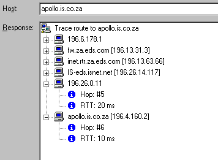

The views and opinions expressed here are my own. They do not necessarily state or reflect those of my employer, my friends, my cats, or the little pixies who live at the bottom of my garden.
This is a totally non-comprehensive compilation of reviews of software that I have found to be useful when working with DNS in the Windows 95/98 and Windows NT environments. The definition of "useful" comes from my own dictionary...
DNS Expert works only with "live" DNS data - nslint-style pre-checking of zones is not possible. The power comes from the ability to customise analysis for checking nearly 70 DNS problems, ranging from "more than one A record with the same IP address" to "same mail server listed with a different preference value".
The miscellaneous checks include reporting on experimental, obsolete, & unknown RRs. There are some omissions: useful ones like sanity checking on the hostmaster info in the SOA record, and obscure ones such as checking to ensure that RP records point to TXT records. (However, I happen to like RP records!)
Checking itself proceeds very quickly. There's no option to specify recursive checking, but this problem can be sidestepped by providing DNS Expert with a list of zones to be checked. Whilst DNS Expert usefully understands the difference between Internet & Intranet DNS, it does not seem to be able to analysis both types in a single checking operation.
Another strength of DNS Expert is in reporting, which can be done to
screen/printer/file with a choice of three levels of detail.
The detailed report type comes with a lot of explanatory information that is of great use in troubleshooting.
DNS Expert would benefit from the addition of a scheduler or support for execution with command line parameters, thereby allowing checking to be carried via a cron job. I would also like to see support for emailing of reports. With such features missing, I cannot yet retire my dnswalk but even so, DNS Expert is already providing far more information than anything I currently use on Unix (and it hurts a bit to say that).
Rating 10/10
Winsock Function GetHostByXRating 8/10
A - Host address
ALL - All records
CNAME - Canonical name for an alias
HINFO - Host information
MAILB - Mailbox related records
MB - Mailbox domain name
MG - Mail group member
MINFO - Mailbox or mail list information
MR - Mail rename domain name
MX - Mail exchange
NS - Authoritative name server
PTR - Domain name pointer
SOA - Start of a zone of authority
TXT - Text strings
WKS - Well known service description
The Ping and Traceroute functions have been improved and the Lookup module now supports AXFR (zone transfer) and RP (Responsible Person) queries - the latter making the TXT query rather more useful than it was in Cyberkit v2.2. It can be noted that all Cyberkit output is now shown in Rich text, thereby breaking the 30,000 character limit that constrains many competing tools. Perform a Zone Transfer of your ISP's domain and you'll likely discover why this is important...
The time client is rather basic, supporting Time, Daytime, & SNTP protocols. What makes this module extremely useful is the complete ntp packet decode - everything from Leap Indicator to Reference ID, and all shown in an understandable form.
Probably the most important new features introduced since Cyberkit v2.2 are the command-line parameters. Almost every Cyberkit feature can be kicked off in this way. This makes Cyberkit perfect for integration into network monitoring packages such as Whats Up Gold or CA Unicentre. Right-click on a router icon and perform a PTR Lookup query; right-click on your DNS server icon and check that it iscorrectly time-synchronised.
All this and Cyberkit is still postcardware!
Rating 10/10
The strength of DNSWS lies in its ability to process files such as webserver logs, replacing IP addresses by host or WINS names. Query responses are cached, but only for the course of the session. Even so, the caching can be very useful. In tests, DNSWS processed a 12 Mb firewall log file in 5 hours. Immediately processing a duplicate file cut the time to 10 minutes.
The lack of a configurable time-out is a drawback. Processing can be very fast indeed when all addresses are resolvable, but slows to a crawl when many addresses have neither a PTR nor WINS record. There are no command line parameters which would allow log processing to be automated. Corrupt WINS responses can cause problems (such as consumption of 100% of CPU) but no crashes occur.
DNSWS is rather expensive at 24.95 Pounds Sterling, but is almost unique in its ability to process files. It has potential and should be considered a utility to keep an eye on.
Rating: 6/10
NetInfo uses Tree and List controls for its output, using an Explorer-style tree format that can be "exploded". This is attractive but does not offer the ability to cut & paste results. However, support has now been added for printing.

The scanner can examine a single C Class address range at a time. v2.x added the ability to scan a portion of a C Class address. However, the scan module is single-threaded and therefore rather slow. The mechanism for entering the "seed" scan address was originally badly conceived and very buggy...it was much too easy to enter a bogus address which thoroughly confuses NetInfo. Things do now seem to be fixed with v3.0.
The service scanner was greatly improved in v2.x. It now strobes a range of ports and the list of ports that are scanned can be customised. Twelve well-known services are scanned by default. The scanner is not suitable for scanning all ports in a given range - unless you want to spend a few hours on customising. v2.1 adds the ability to specify whether TCP or UDP should be checked...a feature that is not found in many other utilities.
The "IPMonitor" Tool uses simple ping and seems quite functional. However, the ability to edit the list of monitored hosts extends only to scan interval, timeout, and number of retries - one cannot edit the hostname/IP address without deleting the entry and then recreating it.
NetInfo compares badly with utilities such as WS_Ping ProPack - but it is free.
Rating: 6/10
Additionally, Ping Plotter uses multiple threads so all points in the sample are gathered at the same time. This works very well - the speed of DNS name resolution for multiple hops in a trace is particularly impressive.
There are only a couple of small drawbacks in Ping Plotter v
Rating: 8/10
Rating: 8/10.
The lookup functionality is very basic, supporting only A record queries. However, this does fit in with the overall aim of these two utilities.
All output is in Rich Text Format, which looks great. All output can be logged to a user-specified file. Right mouse button functionality is supported for all windows.
The Pro version has a useful host manager that allows the user to give a Profile Name to each IP address/DNS name. Double-clicking on a Profile Name pings the corresponding address. Items in the host manager can be sorted by Profile Name or by IP address/DNS Name. The host manager makes a pleasant change from the usual drop down list of addresses - lists that often end up with duplicate or blank entries.
Additionally, the Pro version has an ISPinger feature that keeps your Internet Service Provider connection from being disconnected due to inactivity. TJPingPro can run in the System Tray under Win 95/NT 4.0.
TJPing Pro v1.1 adds an on-line registration capability and scanners that can ping either a sequence of IP addresses or a user-defined list of addresses. With v1.2.1 comes the ability to add sequence scan groups, and perform DNS lookups for scans. However, the scans are much slower than WS_Ping's.
TJPing is freeware and TJPing Pro is shareware, costing $US 12.50.
Both rate 8/10.
Rating: 9/10
Rating: 10/10